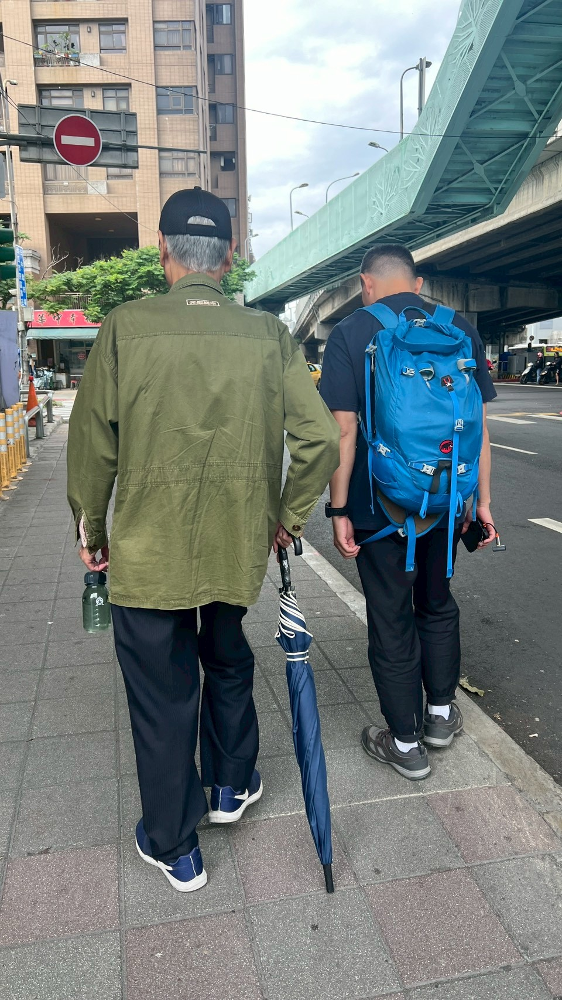

📸 張吉雄伯伯家訪紀實

家訪訪談紀錄
生活環境觀察

輔具使用情形
🚌 生活動線模擬圖

「即時、溫暖、在地」— 陪伴長輩走過每一條熟悉的巷弄
以居住在萬華區環河南路三段一帶的張吉雄先生為例，長輩們的生活往往充滿著對過往回憶的眷戀與對自立生活的堅持。
他們習慣每日清晨步行至國光市場或雙和市場，挑選新鮮的食材與好入口的絞肉，親手用電鍋蒸煮糙米飯來守護健康。
雖然隨著年歲增長，面對無電梯公寓的三樓階梯漸感吃力，且因腳部無力偶有頭暈現象，但他們內心深處依然渴望與社會連結。
無論是去圖書館閱讀，還是到龍山寺祭拜觀世音菩薩尋求心靈慰藉，這些點滴日常正是他們生命活力的來源。理解長輩對自炊的堅持與對社交的渴望，是我們提供最適切服務的核心。
家訪訪談紀錄
生活環境觀察

輔具使用情形
點擊資源名稱可直接規劃 Google 地圖路線
為家屬整理的 10 大照顧解方，已全數校閱正確